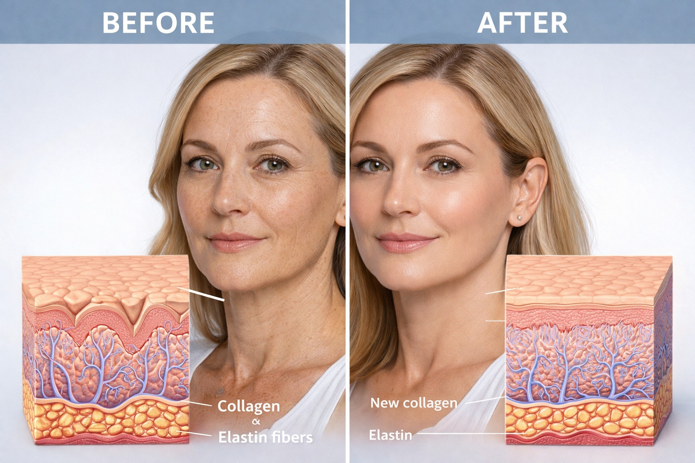

ReGen 8 Pro הוא פרוטוקול טיפולי מתקדם לשיקום, מיצוק וחידוש העור, המבוסס על שילוב בין שתי טכנולוגיות מובילות בעולם האסתטיקה הרפואית:

Morpheus 8 + BIO-RE-PEEL
הטיפול פועל בשכבות העמוקות של העור לצד חידוש פני השטח – ליצירת תהליך ביולוגי אמיתי של התחדשות, ולא רק שיפור זמני במראה.
הפרוטוקול כולל סדרה של:
4 טיפולי Morpheus 8 – גירוי מבוקר של הדרמיס:
- חידוש סיבי קולגן ואלסטין
- שיפור מבנה הרקמה
- מיצוק והידוק העור
- שיפור קמטים ורפיון
3 טיפולי BIO-RE-PEEL – תהליך חידוש עדין אך אפקטיבי:
- הסרת תאים מתים
- שיפור מרקם וגוון העור
- הבהרה ואחידות
- האצת התחדשות טבעית
בעוד Morpheus 8 מטפל בעומק הבעיה, BIO-RE-PEEL משפר את התוצאה החיצונית.
השילוב יוצר:
- מיצוק עמוק של העור
- שיפור מרקם וגוון
- הפחתת קמטים וקמטוטים
- טיפול בפיגמנטציה ואי אחידות
- תהליך התחדשות ביולוגי מלא

- עור מתוח וחזק יותר
- שיפור משמעותי במרקם
- מראה אחיד וזוהר
- הפחתת סימני גיל
- שיפור כולל באיכות העור
התוצאות מתפתחות בהדרגה וממשיכות להשתפר גם לאחר סיום הסדרה.
ReGen 8 Pro מתאים לנשים וגברים המעוניינים ב:
- מיצוק עור הפנים והצוואר
- טיפול בקמטים וקמטוטים
- שיפור פיגמנטציה
- שיקום עור לאחר נזקי שמש
- חידוש כללי של העור
- שילוב טכנולוגיות – עומק + שטח
- טיפול מתקדם ברמה רפואית
- תהליך טבעי של חידוש העור
- תוצאות הדרגתיות עם מראה טבעי
- התאמה אישית מלאה לכל מטופל
הפרוטוקול נבנה בצורה מדורגת:
- טיפולי Morpheus 8 במרווחים מותאמים
- טיפולי BIO-RE-PEEL בין לבין לחיזוק התוצאה
- משך טיפול: כ-45–60 דקות
- תדירות: בהתאם לאבחון מקצועי
לפני תחילת התהליך מתבצע אבחון עור מקצועי הכולל:
- מצב הקולגן והאלסטיות
- עומק הקמטים
- רמת הפיגמנטציה
- סוג העור
בהתאם לכך מותאם פרוטוקול אישי מדויק.
הטיפולים מבוצעים בהתאם לנהלים מחמירים, תוך שימוש בטכנולוגיות מתקדמות המאושרות על ידי משרד הבריאות.
הדגש הוא על תוצאה קלינית אמיתית – לא פתרון זמני.
ניתן לתאם שיחת ייעוץ עם נציג רפואי ללא עלות וללא התחייבות, או לקבוע פגישה באופן עצמאי.
תיאום תור טלפוני ללא עלות